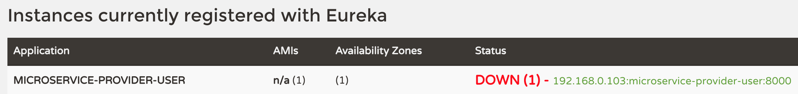

<!DOCTYPE HTML>
<html lang="zh-CN">
<head><meta name="generator" content="Hexo 3.8.0">
    <!--Setting-->
    <meta charset="UTF-8">
    <meta name="viewport" content="width=device-width, user-scalable=no, initial-scale=1.0, maximum-scale=1.0, minimum-scale=1.0">
    <meta http-equiv="X-UA-Compatible" content="IE=Edge,chrome=1">
    <meta http-equiv="Cache-Control" content="no-siteapp">
    <meta http-equiv="Cache-Control" content="no-transform">
    <meta http-equiv="pragma" content="no-cache">
    <meta http-equiv="Cache-Control" content="no-cache, must-revalidate">
    <meta http-equiv="expires" content="Mon Apr 06 2020 02:12:39 GMT+0800 (CST)">
    <meta name="renderer" content="webkit|ie-comp|ie-stand">
    <meta name="apple-mobile-web-app-capable" content="张万众的博客 - 关注Spring Cloud、Docker">
    <meta name="apple-mobile-web-app-status-bar-style" content="black">
    <meta name="format-detection" content="telephone=no,email=no,adress=no">
    <meta name="browsermode" content="application">
    <meta name="screen-orientation" content="portrait">
    <meta name="theme-version" content="1.2.3">
    <meta name="root" content="/">
    
    <!--SEO-->

    <meta name="keywords" content="Spring Cloud">


    <meta name="description" content="在生产环境中，服务的上下线是不可避免的，我们希望能够优雅地下线微服务。本文基于Spring Boot 2.x + Spring Cloud Finchley讲解实际项目中优雅下线服务的四种方式，并探讨各方式的优缺点。

注：Spring Boot 1.x + Spring Cloud Edgw...">


<meta name="robots" content="all">
<meta name="google" content="all">
<meta name="googlebot" content="all">
<meta name="verify" content="all">
    <!--Title-->


<title>实用技巧：Spring Cloud中，如何优雅下线微服务？ | 张万众的博客 - 关注Spring Cloud、Docker</title>


    <link rel="alternate" href="../../atom.html" title="张万众的博客 - 关注Spring Cloud、Docker" type="application/atom+xml">


    

    


<link rel="stylesheet" href="../../static/css/bootstrap.min-271a649e0635d6fa1b.css">
<link rel="stylesheet" href="../../static/css/font-awesome.min-ac2bebcf7fb5b26.css">
<link rel="stylesheet" href="../../static/css/style-6f3c140f6eee20e6591da00ec0.css">


    


    <script>
        var _hmt = _hmt || [];
        (function() {
            var hm = document.createElement("script");
            hm.src = "https://hm.baidu.com/hm.js?13766878cde148282622871dd245a973";
            var s = document.getElementsByTagName("script")[0];
            s.parentNode.insertBefore(hm, s);
        })();
    </script>


    

</head>

</html>
<!--[if lte IE 8]>
<style>
    html{ font-size: 1em }
</style>
<![endif]-->
<!--[if lte IE 9]>
<div style="ie">你使用的浏览器版本过低，为了你更好的阅读体验，请更新浏览器的版本或者使用其他现代浏览器，比如Chrome、Firefox、Safari等。</div>
<![endif]-->

<body>
    
    <nav class="main-navigation">
    <div class="container">
        <div class="row clearfix">
            <div class="col-md-12 column">
                <nav class="navbar navbar-default" style="background-color:#fff;border:0;margin-bottom:0" role="navigation">
                    <div class="navbar-header">
                        <button type="button" class="navbar-toggle" data-toggle="collapse" data-target="#navbar-collapse-1">
                            <span class="sr-only">切</span>
                            <span class="icon-bar"></span>
                            <span class="icon-bar"></span>
                            <span class="icon-bar"></span>
                        </button>
                        <a class="logo" href="../../index.html">
                            张万众的博客
                        </a>
                    </div>

                    <div class="collapse navbar-collapse" style="border:0;" id="navbar-collapse-1">
                        <ul class="nav navbar-nav">
                            
                                
                                    <li>
                                        <a href="../../about.html" target="_blank">
                                            <i class="fa fa-user"></i>
                                            关于我
                                        </a>
                                    </li>
                                
                            
                                
                                    <li>
                                        <a href="../../archives.html" target="_blank">
                                            <i class="fa fa-archive"></i>
                                            归档
                                        </a>
                                    </li>
                                
                            
                                
                                    <li class="dropdown">
                                        <a href="#" class="dropdown-toggle" data-toggle="dropdown" data-hover="dropdown">
                                            <i class="fa fa-fire"></i>
                                            系列课程
                                            <strong class="caret"></strong>
                                        </a>
                                        <ul class="dropdown-menu">
                                            
                                                <li>
                                                    <a href="../../docker/00-docker-lession-index.html" target="_blank">
                                                        <i class="fa "></i>
                                                        Docker系列教程
                                                    </a>
                                                </li>
                                            
                                                <li>
                                                    <a href="../../spring-cloud/spring-cloud-index.html" target="_blank">
                                                        <i class="fa "></i>
                                                        Spring Cloud系列教程
                                                    </a>
                                                </li>
                                            
                                                <li>
                                                    <a href="../../spring-boot/spring-boot-index.html" target="_blank">
                                                        <i class="fa "></i>
                                                        Spring Boot系列教程
                                                    </a>
                                                </li>
                                            
                                        </ul>
                                    </li>
                                
                            
                                
                                    <li class="dropdown">
                                        <a href="#" class="dropdown-toggle" data-toggle="dropdown" data-hover="dropdown">
                                            <i class="fa fa-book"></i>
                                            开源书
                                            <strong class="caret"></strong>
                                        </a>
                                        <ul class="dropdown-menu">
                                            
                                                <li>
                                                    <a href="../../books/rocketmq.html" target="_blank">
                                                        <i class="fa fa-rocket"></i>
                                                        RocketMQ开发者指南
                                                    </a>
                                                </li>
                                            
                                                <li>
                                                    <a href="../../books/skywalking.html" target="_blank">
                                                        <i class="fa fa-skyatlas"></i>
                                                        Skywalking 6.2.0中文文档
                                                    </a>
                                                </li>
                                            
                                        </ul>
                                    </li>
                                
                            
                                
                                    <li class="dropdown">
                                        <a href="#" class="dropdown-toggle" data-toggle="dropdown" data-hover="dropdown">
                                            <i class="fa fa-cog"></i>
                                            工具
                                            <strong class="caret"></strong>
                                        </a>
                                        <ul class="dropdown-menu">
                                            
                                                <li>
                                                    <a href="../../tools/markdown2.html" target="_blank">
                                                        <i class="fa "></i>
                                                        微信排版工具2.0
                                                    </a>
                                                </li>
                                            
                                        </ul>
                                    </li>
                                
                            
                        </ul>
                        
                            <form id="search-form" class="navbar-form navbar-right">
                                <div class="form-group input-group">
                                    <input type="text" id="local-search-input" class="form-control" placeholder="搜我...">
                                    <span class="input-group-btn">
                                        <a class="btn btn-default">
                                            <i class="fa fa-search"></i>
                                        </a>
                                    </span>
                                </div>
                                <div id="local-search-result" class="local-search-result-cls"></div>
                            </form>
                        
                    </div>
                </nav>
            </div>
        </div>
    </div>
</nav>

    <a href="javascript:;" target="_blank">
        
    </a>


    <section class="content-wrap">
        <div class="container">
            <div class="row">
                <main class="col-md-8 main-content m-post">
                    

<p id="process"></p>
<article class="post">
    <div class="post-head">
        <h1 id="实用技巧：Spring Cloud中，如何优雅下线微服务？">
            
                实用技巧：Spring Cloud中，如何优雅下线微服务？
            
        </h1>
        <div class="post-meta">
    
        <span class="categories-meta fa-wrap">
            <i class="fa fa-folder-open-o"></i>
            <a class="category-link" href="javascript:;">Spring Cloud</a>
        </span>
    

    
        <span class="fa-wrap">
            <i class="fa fa-tags"></i>
            <span class="tags-meta">
                
                    <a class="tag-link" href="javascript:;">Spring Cloud</a>
                
            </span>
        </span>
    

    
        
        <span class="fa-wrap">
            <i class="fa fa-clock-o"></i>
            <span class="date-meta">2018/12/09</span>
        </span>
        
            <span class="fa-wrap">
                <i class="fa fa-eye"></i>
                <span id="busuanzi_value_page_pv"></span>
            </span>
        
    
</div>
        
        
    </div>
    
    <div class="post-body post-content" id="post-content">
        
    <div class="toc-article">
        <strong>
            目录
        </strong>
        <div class="toc-content">
            <ol class="toc"><li class="toc-item toc-level-2"><a class="toc-link" href="#方式一：kill-java进程【不建议】"><span class="toc-text">方式一：kill java进程【不建议】</span></a></li><li class="toc-item toc-level-2"><a class="toc-link" href="#方式二：-shutdown-端点【不建议】"><span class="toc-text">方式二：/shutdown 端点【不建议】</span></a></li><li class="toc-item toc-level-2"><a class="toc-link" href="#方式三：-pause-端点【生产可用，但有一点缺陷】"><span class="toc-text">方式三：/pause 端点【生产可用，但有一点缺陷】</span></a><ol class="toc-child"><li class="toc-item toc-level-3"><a class="toc-link" href="#缺点-amp-局限"><span class="toc-text">缺点&amp;局限</span></a></li></ol></li><li class="toc-item toc-level-2"><a class="toc-link" href="#方式四：-service-registry-端点【生产可用】"><span class="toc-text">方式四：/service-registry 端点【生产可用】</span></a><ol class="toc-child"><li class="toc-item toc-level-3"><a class="toc-link" href="#缺点"><span class="toc-text">缺点</span></a></li></ol></li><li class="toc-item toc-level-2"><a class="toc-link" href="#拓展一下"><span class="toc-text">拓展一下</span></a></li></ol>
        </div>
    </div>


        <p>在生产环境中，服务的上下线是不可避免的，我们希望能够优雅地下线微服务。本文基于Spring Boot 2.x + Spring Cloud Finchley讲解实际项目中优雅下线服务的四种方式，并探讨各方式的优缺点。</p>
<blockquote>
<p><strong>注</strong>：Spring Boot 1.x + Spring Cloud Edgware及之前的方式相同，但配置有区别，本文不做讨论。</p>
</blockquote>
<a id="more"></a>
<h2 id="方式一：kill-java进程【不建议】"><a href="#方式一：kill-java进程【不建议】" class="headerlink" title="方式一：kill java进程【不建议】"></a>方式一：kill java进程【不建议】</h2><p>使用方式：</p>
<figure class="highlight shell"><table><tr><td class="gutter"><pre><span class="line">1</span><br></pre></td><td class="code"><pre><span class="line">kill java进程ID</span><br></pre></td></tr></table></figure>
<p>该方式借助的是Spring Boot应用的Shutdown hook，应用本身的下线也是优雅的，但如果你的服务发现组件使用的是Eureka，那么默认最长会有90秒的延迟，其他应用才会感知到该服务下线，<strong>这意味着：该实例下线后的90秒内，其他服务仍然可能调用到这个已下线的实例</strong>。因此，该方式是<strong>不够优雅</strong>的 。</p>
<h2 id="方式二：-shutdown-端点【不建议】"><a href="#方式二：-shutdown-端点【不建议】" class="headerlink" title="方式二：/shutdown 端点【不建议】"></a>方式二：<code>/shutdown</code> 端点【不建议】</h2><p>Spring Boot提供了<code>/shutdown</code> 端点，可以借助它实现优雅停机。使用方式：</p>
<ul>
<li><p>在想下线应用的<code>applicationyml</code> 中添加如下配置，从而启用并暴露<code>/shutdown</code> 端点：</p>
<figure class="highlight yaml"><table><tr><td class="gutter"><pre><span class="line">1</span><br><span class="line">2</span><br><span class="line">3</span><br><span class="line">4</span><br><span class="line">5</span><br><span class="line">6</span><br><span class="line">7</span><br><span class="line">8</span><br></pre></td><td class="code"><pre><span class="line"><span class="attr">management:</span></span><br><span class="line"><span class="attr">  endpoint:</span></span><br><span class="line"><span class="attr">    shutdown:</span></span><br><span class="line"><span class="attr">      enabled:</span> <span class="literal">true</span></span><br><span class="line"><span class="attr">  endpoints:</span></span><br><span class="line"><span class="attr">    web:</span></span><br><span class="line"><span class="attr">      exposure:</span></span><br><span class="line"><span class="attr">        include:</span> <span class="string">shutdown</span></span><br></pre></td></tr></table></figure>
</li>
<li><p>发送POST请求到<code>/shutdown</code> 端点</p>
<figure class="highlight shell"><table><tr><td class="gutter"><pre><span class="line">1</span><br></pre></td><td class="code"><pre><span class="line">curl -X http://你想停止的服务地址/actuator/shutdown</span><br></pre></td></tr></table></figure>
</li>
</ul>
<p>该方式本质和方式一是一样的，也是借助Spring Boot应用的Shutdown hook去实现的。</p>
<h2 id="方式三：-pause-端点【生产可用，但有一点缺陷】"><a href="#方式三：-pause-端点【生产可用，但有一点缺陷】" class="headerlink" title="方式三：/pause 端点【生产可用，但有一点缺陷】"></a>方式三：<code>/pause</code> 端点【生产可用，但有一点缺陷】</h2><p>Spring Boot应用提供了<code>/pause</code> 端点，利用该端点可实现优雅下线。</p>
<p>使用方式：</p>
<ul>
<li><p>在想下线应用的<code>application.yml</code> 中添加配置，从而启用并暴露<code>/pause</code> 端点：</p>
<figure class="highlight yaml"><table><tr><td class="gutter"><pre><span class="line">1</span><br><span class="line">2</span><br><span class="line">3</span><br><span class="line">4</span><br><span class="line">5</span><br><span class="line">6</span><br><span class="line">7</span><br><span class="line">8</span><br><span class="line">9</span><br><span class="line">10</span><br><span class="line">11</span><br><span class="line">12</span><br></pre></td><td class="code"><pre><span class="line"><span class="attr">management:</span></span><br><span class="line"><span class="attr">  endpoint:</span></span><br><span class="line">    <span class="comment"># 启用pause端点</span></span><br><span class="line"><span class="attr">    pause:</span></span><br><span class="line"><span class="attr">      enabled:</span> <span class="literal">true</span></span><br><span class="line">    <span class="comment"># 启用restart端点，之所以要启用restart端点，是因为pause端点的启用依赖restart端点的启用。详见：https://cloud.spring.io/spring-cloud-static/Finchley.SR2/single/spring-cloud.html#_endpoints</span></span><br><span class="line"><span class="attr">    restart:</span></span><br><span class="line"><span class="attr">      enabled:</span> <span class="literal">true</span></span><br><span class="line"><span class="attr">  endpoints:</span></span><br><span class="line"><span class="attr">    web:</span></span><br><span class="line"><span class="attr">      exposure:</span></span><br><span class="line"><span class="attr">        include:</span> <span class="string">pause,restart</span></span><br></pre></td></tr></table></figure>
</li>
<li><p>发送POST请求到<code>/actuator/pause</code> 端点：</p>
<figure class="highlight shell"><table><tr><td class="gutter"><pre><span class="line">1</span><br></pre></td><td class="code"><pre><span class="line">curl -X POST http://你想停止的服务实例地址/actuator/pause</span><br></pre></td></tr></table></figure>
</li>
<li><p>执行后的效果类似下图：</p>
<p></p>
<p>如图所示，该应用在Eureka Server上的状已被标记为<code>DOWN</code> ，<strong>但是应用本身其实依然是可以正常对外服务的</strong>。在Spring Cloud中，Ribbon做负载均衡时，只会负载到标记为<code>UP</code> 的实例上。利用这两点，你可以：先用pause端点，将要下线的应用标记为DOWN，但不去真正停止应用；然后过一定的时间（例如90秒，或者自己做个监控，看当前实例的流量变成0后）再去停止应用，例如<code>kill 应用</code> ，当然如果你足够变态，<code>kill -9 也可以</code>  。</p>
</li>
</ul>
<h3 id="缺点-amp-局限"><a href="#缺点-amp-局限" class="headerlink" title="缺点&amp;局限"></a>缺点&amp;局限</h3><table>
<thead>
<tr>
<th>缺点</th>
<th>描述</th>
</tr>
</thead>
<tbody>
<tr>
<td>不同的版本配置不大一样</td>
<td>早期的Spring Cloud版本中，，pause端点是不依赖restart端点的，后来一个pull request导致pause端点必须依赖restart端点…个人给官方提issue，官方最后选择了继续依赖，我也是醉了……</td>
</tr>
<tr>
<td>无法和Eureka的健康检查配合使用</td>
<td>如果你的服务发现组件用的是Eureka，并且你的应用开启了健康检查（<code>eureka.client.healthcheck.enabled = true</code> ，<strong>那么<code>/pause</code> 端点无效！！！</strong></td>
</tr>
</tbody>
</table>
<h2 id="方式四：-service-registry-端点【生产可用】"><a href="#方式四：-service-registry-端点【生产可用】" class="headerlink" title="方式四：/service-registry 端点【生产可用】"></a>方式四：<code>/service-registry</code> 端点【生产可用】</h2><p>使用方式：</p>
<ul>
<li><p>在想下线应用的<code>application.yml</code> 中添加配置，从而暴露<code>/service-registry</code> 端点：</p>
<figure class="highlight shell"><table><tr><td class="gutter"><pre><span class="line">1</span><br><span class="line">2</span><br><span class="line">3</span><br><span class="line">4</span><br><span class="line">5</span><br></pre></td><td class="code"><pre><span class="line">management:</span><br><span class="line">  endpoints:</span><br><span class="line">    web:</span><br><span class="line">      exposure:</span><br><span class="line">        include: service-registry</span><br></pre></td></tr></table></figure>
<p>发送POST请求到<code>/actuator/service-registry</code> 端点：</p>
<figure class="highlight shell"><table><tr><td class="gutter"><pre><span class="line">1</span><br><span class="line">2</span><br></pre></td><td class="code"><pre><span class="line">curl -X "POST" "http://localhost:8000/actuator/service-registry?status=DOWN" \</span><br><span class="line">   -H "Content-Type: application/vnd.spring-boot.actuator.v2+json;charset=UTF-8"</span><br></pre></td></tr></table></figure>
<p>实行后的效果类似如下图：</p>
<p></p>
<p>由图可知，使用<code>/service-registry</code> 端点可实现类似<code>/pause</code> 端点的效果。</p>
</li>
</ul>
<h3 id="缺点"><a href="#缺点" class="headerlink" title="缺点"></a>缺点</h3><p>暂时没有发现缺点。</p>
<h2 id="拓展一下"><a href="#拓展一下" class="headerlink" title="拓展一下"></a>拓展一下</h2><p>在实际项目中，你可以做一个运维工具：</p>
<ul>
<li>运维工具读取服务发现组件中的所有服务。</li>
<li>有一天你想下线某个服务的时候，就点击该示例的“优雅下线” 按钮，该按钮会请求到想要下线的服务的<code>/pause</code> 端点或者<code>service-registry</code> 端点（看你能不能容忍<code>/pause</code> 端点的缺点），这样就可以把该实例在Eureka上标记为DOWN，流量过一段时间后就不会打到这个实例上。</li>
<li>做一个流量检测工具（例如QPS统计，这种百度随便找下，最简单的一个过滤器 + map就可以做了），如果检测到当前实例确实已经没有流量进入，就在运维工具上点击另一个按钮，例如停止。真正停止应用。<ul>
<li>当然，如何停止应用又是另一个问题了，例如你可以请求实例的shutdown端点（Spring Boot提供了优雅下线的端点），或者用脚本kill，或者如果是容器可以借助一些探针……</li>
</ul>
</li>
</ul>

        <h2>相关文章</h2><ul><li><a href="../../spring-cloud/finchley-26/index.html">跟我学Spring Cloud（Finchley版）-26-使用Elasticsearch作为Zipkin Server的后端存储</a></li><li><a href="../../spring-cloud-feign-ribbon-first-request-fail/index.html">Spring Cloud中，如何解决Feign/Ribbon第一次请求失败的问题？</a></li><li><a href="../../spring-cloud-sum-eureka/index.html">Spring Cloud中，Eureka常见问题总结</a></li><li><a href="../../advertisment/my-spring-book/index.html">《Spring Cloud与Docker微服务实战》实体书目录</a></li><li><a href="../../advertisment/my-spring-book-code/index.html">《Spring Cloud与Docker微服务架构实战》配套代码</a></li></ul>
    </div>
    
    <div class="post-footer">
        <div class="col-sm-10">
            <div>
                <b>本文链接</b>：<a href="" target="_blank">实用技巧：Spring Cloud中，如何优雅下线微服务？</a>
            </div>
            <div>
                
                    转载声明：本博客由张万众创作，采用 <a href="javascript:;" target="_blank"> CC BY 3.0 CN </a> 许可协议。可自由转载、引用，但需署名作者且注明文章出处。如转载至微信公众号，请在文末添加作者公众号二维码。
                
            </div>
            <div>
                
            </div>
        </div>
        <div class="col-sm-2">
            
        </div>
    </div>
</article>

<div class="article-nav prev-next-wrap clearfix">
    
        <a target="_blank" href="../../work/our-cloud-platform-tools/index.html" class="pre-post btn btn-default" title="分享我司基于K8s & Spring Cloud的私有云技术选型！">
            <i class="fa fa-angle-left fa-fw"></i><span class="hidden-lg">上一篇</span>
            <span class="hidden-xs">分享我司基于K8s & Spring Cloud的私有云技术选型！</span>
        </a>
    
    
        <a target="_blank" href="../../work/arrayindexoutofboundsexception/index.html" class="next-post btn btn-default" title="一个离奇的ArrayIndexOutOfBoundsException异常的排查过程">
            <span class="hidden-lg">下一篇</span>
            <span class="hidden-xs">一个离奇的ArrayIndexOutOfBoundsException异常的排查过程</span><i class="fa fa-angle-right fa-fw"></i>
        </a>
    
</div>


    <div id="comments">
        
   <p>评论系统未开启，无法评论！</p>

    </div>


                </main>
                
    <aside class="col-md-4 sidebar">
        
        <div class="widget about-me">
    <div class="row">
        <div class="col-md-5">
            
        </div>
        <div class="col-md-7">
            <a class="series-a" href="javascript:void(0)">公众号</a>
            <ul>
                <li>• 技术干货推送</li>
                <li>• 免费资料领取</li>
                <li><b>• 扫码领取更多惊喜</b></li>
            </ul>
        </div>
    </div>
    
        <div class="row">
            <div class="col-md-5">
                
            </div>
            <div class="col-md-7">
                <a class="series-a" href="javascript:void(0)">小程序</a>
                <ul>
                    <li>• 原创笔记</li>
                    <li>• 独家心法</li>
                    <li><b>• 扫码领取</b></li>
                </ul>
            </div>
        </div>
    
</div>


        
        
    <div class="ad">
        <div class="row">
            <div class="col-md-12">
                <a href="javascript:;" rel="nofollow" target="_blank">
                    
                </a>
            </div>
        </div>
    </div>


        
        <div class="widget">
    <div class="row">
        <div class="col-md-3">
            
        </div>
        <div class="col-md-9">
            <a class="series-a" target="_blank" href="../../spring-cloud/spring-cloud-index.html">Spring Cloud系列教程</a>
            <p>全面、通俗易懂的Spring Cloud教程</p>
        </div>
    </div>
    <div class="row">
        <div class="col-md-3">
            
        </div>
        <div class="col-md-9">
            <a class="series-a" target="_blank" href="javascript:;">Spring Cloud Alibaba视频教程</a>
            <p>全网唯一，你值得拥有</p>
        </div>
    </div>
    <div class="row">
        <div class="col-md-3">
            
        </div>
        <div class="col-md-9">
            <a class="series-a" target="_blank" href="../../docker/00-docker-lession-index.html">Docker系列教程</a>
            <p>Docker系列</p>
        </div>
    </div>
    <div class="row">
        <div class="col-md-3">
            
        </div>
        <div class="col-md-9">
            <a class="series-a" target="_blank" href="../../spring-boot/spring-boot-index.html">Spring Boot系列教程</a>
            <p>Boot是基石...</p>
        </div>
    </div>
</div>


        
        
    <div class="widget">
        <h3 class="title">分类</h3>
        <ul class="category-list"><li class="category-list-item"><a class="category-list-link" href="javascript:;"><i class="fa" aria-hidden="true">Docker</i></a><span class="category-list-count">31</span></li><li class="category-list-item"><a class="category-list-link" href="javascript:;"><i class="fa" aria-hidden="true">Kubernetes</i></a><span class="category-list-count">2</span></li><li class="category-list-item"><a class="category-list-link" href="javascript:;"><i class="fa" aria-hidden="true">Spring Boot</i></a><span class="category-list-count">6</span></li><li class="category-list-item"><a class="category-list-link current" href="javascript:;"><i class="fa" aria-hidden="true">Spring Cloud</i></a><span class="category-list-count">94</span></li><li class="category-list-item"><a class="category-list-link" href="javascript:;"><i class="fa" aria-hidden="true">Spring Cloud Alibaba</i></a><span class="category-list-count">16</span></li><li class="category-list-item"><a class="category-list-link" href="javascript:;"><i class="fa" aria-hidden="true">Spring Cloud Stream</i></a><span class="category-list-count">1</span></li><li class="category-list-item"><a class="category-list-link" href="../../categories/其他/index.html"><i class="fa" aria-hidden="true">其他</i></a><span class="category-list-count">13</span></li><li class="category-list-item"><a class="category-list-link" href="../../categories/安装教程/index.html"><i class="fa" aria-hidden="true">安装教程</i></a><span class="category-list-count">7</span></li><li class="category-list-item"><a class="category-list-link" href="../../categories/工作/index.html"><i class="fa" aria-hidden="true">工作</i></a><span class="category-list-count">20</span></li></ul>
    </div>


        
        
        
        

        
    </aside>

            </div>
        </div>
    </section>
    <footer class="main-footer">
    <div class="container">
        <div class="row">
        </div>
    </div>
</footer>

<a id="back-to-top" class="icon-btn hide">
	<i class="fa fa-chevron-up"></i>
</a>


    <div class="copyright">
    <div class="container">
        <div class="row">
            <div class="col-sm-12">
                <div class="busuanzi">
    
        访问量:
        <strong id="busuanzi_value_site_pv">
            <i class="fa fa-spinner fa-spin"></i>
        </strong>
        &nbsp; | &nbsp;
        访客数:
        <strong id="busuanzi_value_site_uv">
            <i class="fa fa-spinner fa-spin"></i>
        </strong>
        &nbsp; <strong>Since 2018-12-26</strong>
    
</div>

            </div>
            <div class="col-sm-12">
                <span>Copyright &copy; 2017
                </span> |
                <span>
                    Powered by <a href="javascript:;" class="copyright-links" target="_blank" rel="nofollow">Hexo</a>
                </span> |
                <span>
                    Theme by <a href="javascript:;" class="copyright-links" target="_blank" rel="nofollow">ITMuch</a>
                </span>
            </div>
        </div>
    </div>
</div>

<script src="../../static/js/jquery.min.js"></script>
<script src="../../static/js/bootstrap.min.js"></script>
<script src="../../static/js/bootstrap-hover-dropdown.min.js"></script>

    <script src="../../static/js/search-3f4fbd0557c869ca0516ebb5f.js"></script>


    <script async="" src="../../static/js/busuanzi.pure.mini.js"></script>


<script src="../../static/js/app-da10bb3b2ae5c8348d2bd2cc3faf.js"></script>


</body>
